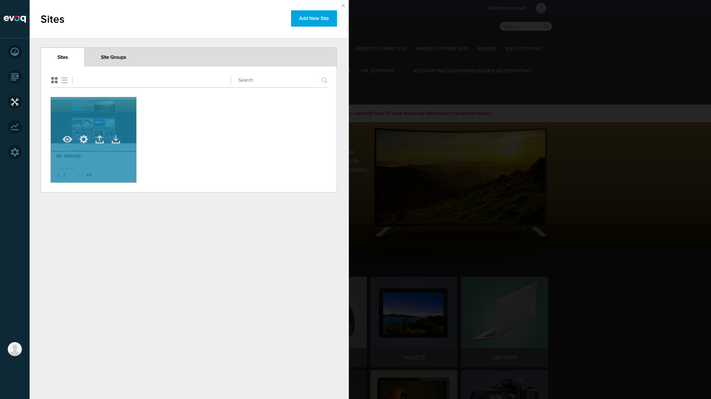
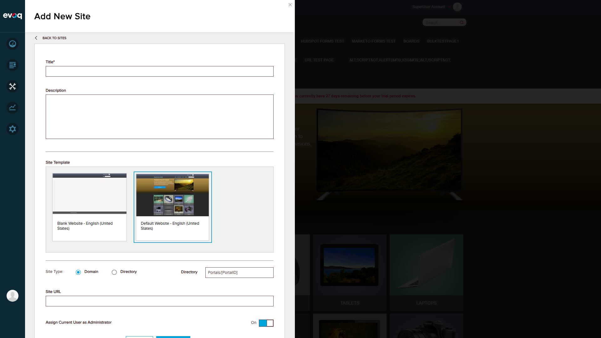
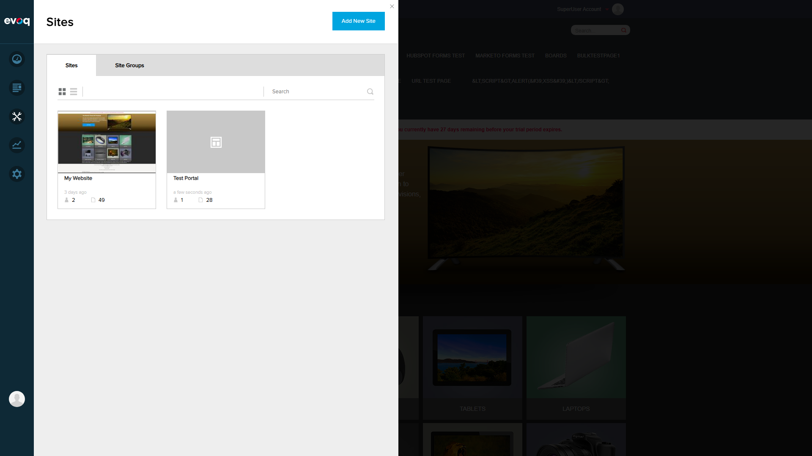
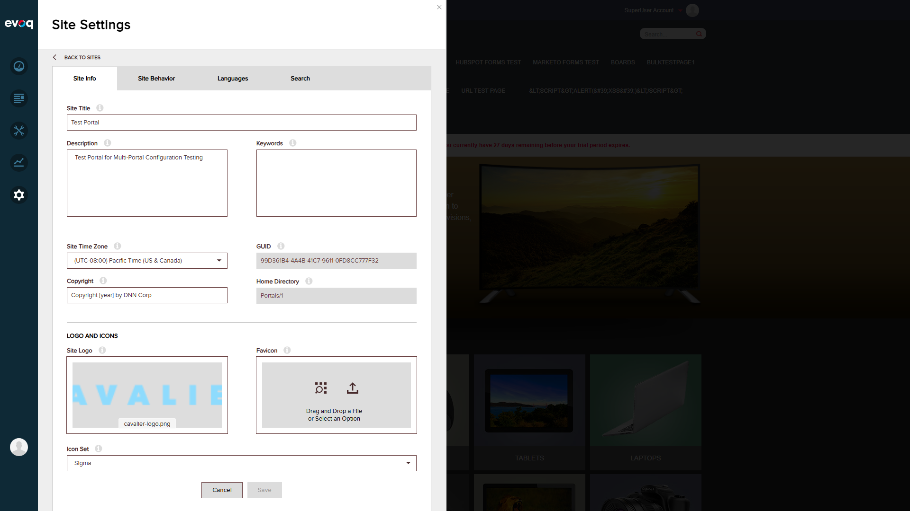

Multi-Portal Configuration Support - Test Report
| Extension: | Evoq.PersonaBar.SiteSettings (PersonaBar Module) |
| Feature Name: | Multi-Portal Configuration Support |
| Feature Priority: | Medium |
| Description: | Supports configuration of settings across multiple portals in a DNN installation |
| UI Location: | Admin > Settings > Site Settings (with portal selector) |
| Relevant Files: | Services/EvoqSiteSettingsController.cs, Components/EvoqSiteSettingsController.cs |
| Test Date: | December 30, 2025 |
Code Analysis Summary
The Multi-Portal Configuration Support feature is implemented through the following key mechanisms:
GetSettingsPortalId() Method (Services/EvoqSiteSettingsController.cs:464-467)
private int GetSettingsPortalId(int portalId)
{
return portalId > -1 ? portalId : PortalId;
}
- Default Portal ID (-1): When portalId=-1 is passed, the current portal's ID is used
- Specific Portal ID: When a specific portalId is passed (>-1), that portal's settings are accessed
- All API endpoints accept the portalId parameter for cross-portal configuration
Test Scenarios
1. Login and Navigate to Site Settings
PASS
Steps Taken:
- Navigated to http://localhost:8081/Login
- Logged in as host user (superuser)
- Accessed Site Settings via PersonaBar

Figure 1: DNN Login Page

Figure 2: Site Settings Panel showing Portal 0 (My Website)
Observations: Successfully logged in and accessed Site Settings. The Home Directory shows "Portals/0" indicating Portal ID 0.
2. View Sites Management and Create Second Portal
PASS
Steps Taken:
- Navigated to Manage > Sites
- Observed existing portal "My Website"
- Clicked "Add New Site"
- Created "Test Portal" with directory site type

Figure 3: Sites Management - Initial state with one portal

Figure 4: Add New Site form with configuration options

Figure 5: Sites Management showing both portals - My Website (Portal 0) and Test Portal (Portal 1)
Observations:
- Successfully created second portal "Test Portal"
- Portal 0 (My Website): 2 users, 49 pages
- Portal 1 (Test Portal): 1 user, 28 pages
3. Switch Between Different Portals and Verify Portal-Specific Settings
PASS
Steps Taken:
- Clicked Site Settings for "Test Portal"
- Verified unique settings: Site Title, GUID, Home Directory
- Compared with Portal 0 settings

Figure 6: Test Portal (Portal 1) Site Settings - Note different GUID and Home Directory
Portal Settings Comparison:
| Setting | My Website (Portal 0) | Test Portal (Portal 1) |
|---|---|---|
| Site Title | My Website | Test Portal |
| GUID | 5CC8BD37-15D6-4F0D-A000-B8740E57C851 | 99D361B4-4A4B-41C7-9611-0FD8CC777F32 |
| Home Directory | Portals/0 | Portals/1 |
4. Save Settings for Non-Current Portal
PASS
Steps Taken:
- While viewing Test Portal settings, added description: "Test Portal for Multi-Portal Configuration Testing"
- Clicked Save button
- Verified success message appeared

Figure 7: Settings saved successfully for Test Portal
Observations: Successfully saved description for Test Portal (non-current portal) while logged into Portal 0. The success message "Settings have been updated" confirmed the save operation.
5. Verify Settings Isolation Between Portals
PASS
Steps Taken:
- Navigated back to Sites list
- Opened Site Settings for "My Website" (Portal 0)
- Verified Description field is empty (not affected by Test Portal's description)

Figure 8: My Website (Portal 0) settings - Description remains empty, confirming isolation
Observations: Changes made to Test Portal's description did NOT affect My Website's description. This confirms that settings are properly isolated between portals.
6. Test API with Default Portal ID (-1)
PASS
Steps Taken:
- Called API: /API/PersonaBar/EvoqSiteSettings/GetCrawlSettings?portalId=-1
- Verified response returns current portal's settings
| Test Case | Portal ID | HTTP Status | Result |
|---|---|---|---|
| Default Portal ID | -1 | 200 OK | PASS - Uses current portal |
| Portal 0 | 0 | 200 OK | PASS - Returns Portal 0 data |
| Portal 1 | 1 | 200 OK | PASS - Returns Portal 1 data |
Observations: The API correctly handles the default portalId (-1) by using the current portal's ID, as implemented in the GetSettingsPortalId() method.
7. Test API with Invalid Portal ID
PARTIAL
Steps Taken:
- Called API: /API/PersonaBar/EvoqSiteSettings/GetCrawlSettings?portalId=9999
- Observed error response
| Test Case | Portal ID | HTTP Status | Result |
|---|---|---|---|
| Invalid Portal ID | 9999 | 500 Internal Server Error | PARTIAL - Returns error for non-existent portal |
Observations: The API returns a 500 Internal Server Error when an invalid portal ID is provided. This is expected behavior but could be improved with more graceful error handling (e.g., returning 404 Not Found or a user-friendly error message).
Test Summary
7
Total Tests
6
Passed
1
Partial
0
Failed
Overall Result: PASS
Key Findings:
- Portal Switching: Superusers can successfully switch between different portals and access their settings
- Portal-Specific Settings: Each portal maintains its own unique settings (Site Title, GUID, Home Directory, Description, etc.)
- Settings Isolation: Changes to one portal's settings do NOT affect other portals
- Cross-Portal Configuration: Settings can be saved for non-current portals
- Default Portal ID (-1): API correctly resolves -1 to the current portal's ID
- Invalid Portal ID: API returns 500 error for non-existent portals (could be improved)
Recommendations:
- Consider returning a more descriptive error (404 Not Found or validation error) for invalid portal IDs instead of 500 Internal Server Error
- Add input validation to reject obviously invalid portal IDs before attempting to access portal data